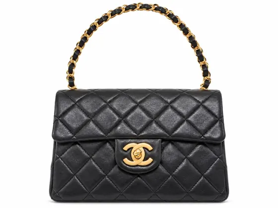
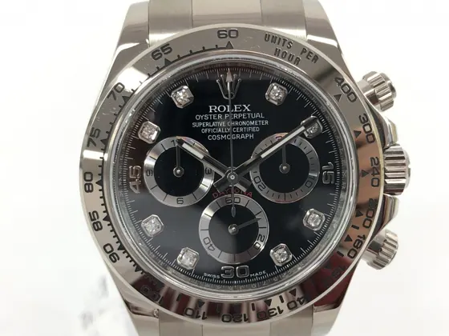
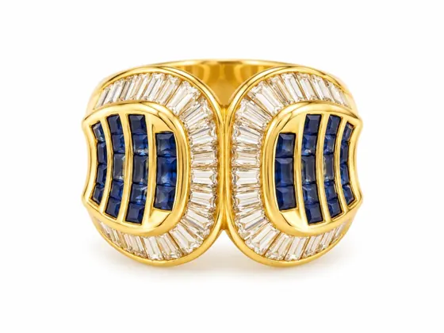
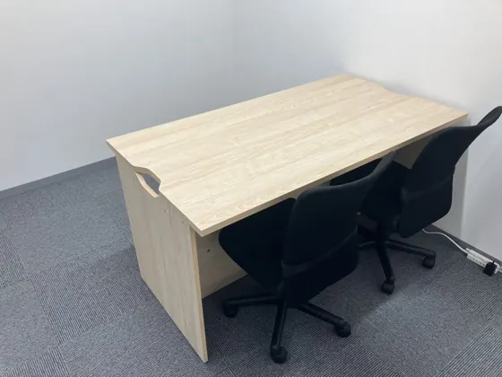
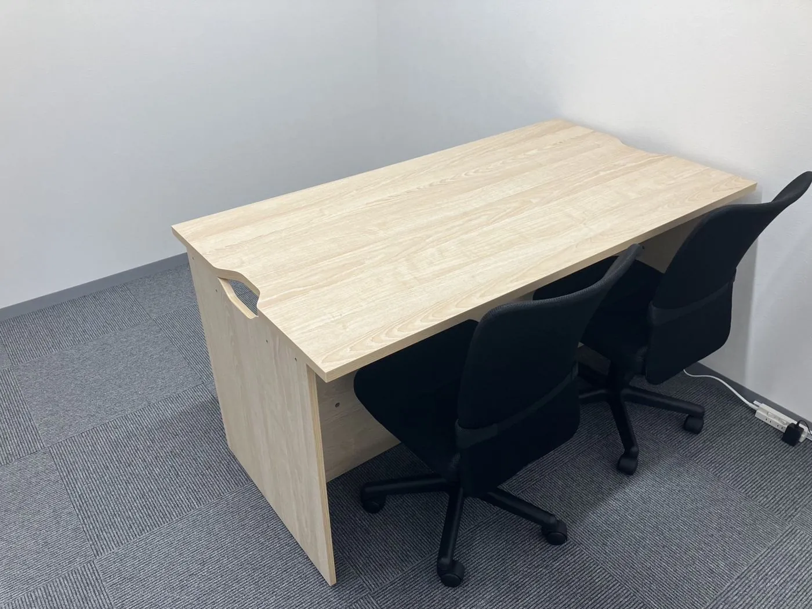
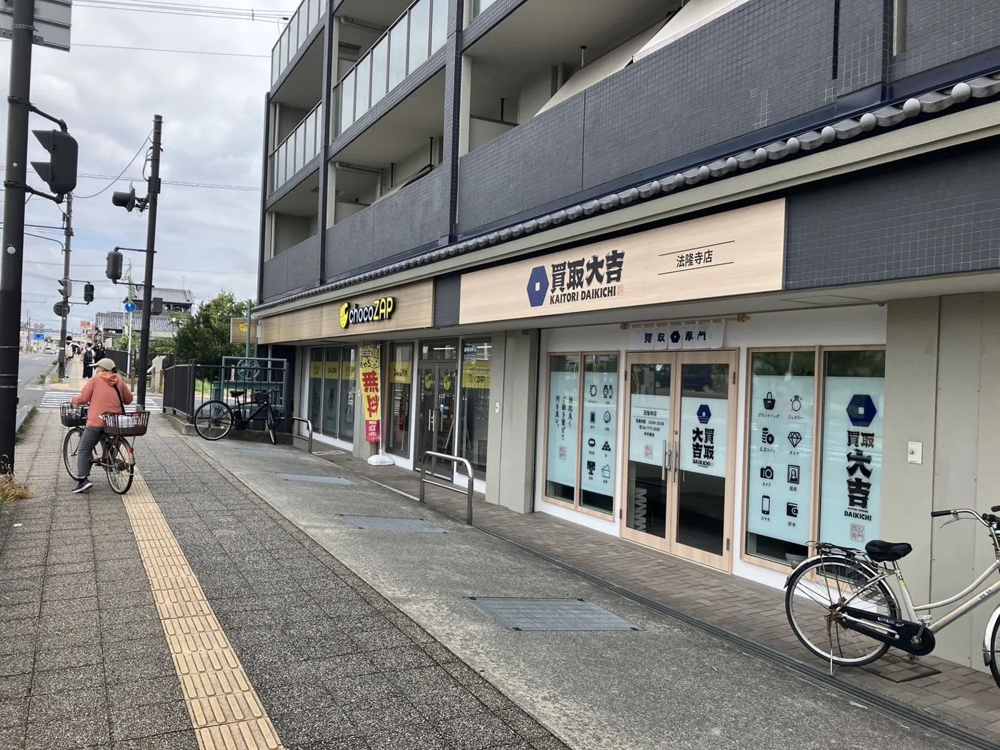

テレビCMでおなじみ・全国2,500店舗以上
斑鳩町で金・貴金属・ブランド品の買取なら 買取大吉 法隆寺店眠っている金・ジュエリー、
いくらになるか
知っていますか？昔買った指輪、
いまいくらになるか
気になりませんか？
切れたネックレス1本から無料で査定します。ご相談だけでも大丈夫です。参考価格を見る →
WEB限定クーポン｜11月30日（月）まで 時計・アクセサリー買取金額が上記以外の品物も10%UP・法隆寺店のみ30%UP WEB限定クーポンを表示する※対象の品物や条件は、クーポン欄でご確認ください。
お電話でご来店予約いただくと、買取金額30%UP（上限1万円）
査定無料 ・ 予約不要 ・ 売らなくても大丈夫
- ★ Googleの口コミ 4.9（56件・11/18時点）
- 年中無休 10:00〜19:00
- 法隆寺駅から徒歩7分
- 無料駐車場10台以上
- 半個室で査定




法隆寺店で実際にお買取りしたお品物です


WEB LIMITED COUPON
WEB限定クーポン
使い方：ご来店時に、この画面をスタッフにお見せください
対象：時計・アクセサリー → 買取金額30%UP上記以外の品物 → 買取金額10%UP
対象店舗：買取大吉 法隆寺店のみ
ご来店予約の特典
お電話でご来店を予約していただくと、買取金額30%UP（上限1万円）。
06-7777-6590（10:00〜19:00）
※予約なしでもご来店いただけます。※他のクーポン・キャンペーンとの併用はできません。
対象の品物や条件は、ご来店前にお電話でも確認できます（06-7777-6590）
有効期限：2026年11月30日（月）まで※通常の査定額から30%アップします。
※30%アップの対象外となる品物も、10%アップでお買取りします。詳しくは直接お問い合わせください。
※他のクーポン・キャンペーンとの併用はできません
こんなこと、ありませんか？
- 引き出しに、もう着けないアクセサリーがある
- 実家の片付けで、古い時計や記念コインが出てきた
- 売るかはまだ決めていない。値段だけ知りたい
- 買取店に入るのは、なんとなく不安
全国チェーンの買取大吉 法隆寺店なら、
半個室で・無料で・相談だけでも。車でそのまま来られます。
壊れていても、片方だけでも
「金」なら値段がつきます。
金のほかにも、こんな物を買取しています。
ITEMS
特に力を入れている品物
昔買った指輪、片方だけのピアス、切れたネックレス。価値が分からなくても、そのままお持ちください。
金・プラチナ
切れたネックレス、片方だけのピアス、刻印のないものもご相談ください。メッキのアクセサリーも、自社オークションや海外への販路があるので、デザインやブランドで査定します。
金・プラチナの買取をくわしく →食べ物と生き物以外なら、どんな品物でも査定します。
このほか、切手・古銭・記念硬貨や、遺品整理・生前整理のお品物など、いろいろなお品物を査定しています。
※お値段がつかない物や、偽物・法律で売り買いできない物など、お取り扱いできない物もあります。
大吉の安心に、法隆寺店の3つの「来やすさ」
車でそのまま
建物の裏に無料駐車場があります。重い物やたくさんの品物も運びやすく、運び込みもスタッフがお手伝いします。
半個室で査定
ほかのお客様の目を気にせず、落ち着いてご相談いただけます。
相談だけでもOK
「いくらになるか知りたい」だけのご来店も歓迎です。査定は無料です。
まずは電話かLINEで、気軽にどうぞ。
品物が多い・重い・足が不安なときは、ご自宅まで無料でうかがいます。出張買取を見る →

PRIVATE SPACE
半個室で、ゆっくり査定
査定は、周りの目を気にせずにご相談いただける半個室で行います。大切なお品物のことも、ご実家の整理のことも、落ち着いてお話しください。
ご家族やご友人とご一緒のご来店も大歓迎です。
RESULTS & BLOG
お買取り実績・店長ブログ
法隆寺店で実際にお買取りした品物と、売る前に知っておきたいことを書いています。


※実績の写真は背景や明るさを調整しています。
PRICE
買取参考価格
全国の買取大吉でのお買取り例です（2026年11月18日時点）
法隆寺店では、お品物を1点ずつ無料で査定します。数千円の品物でもお気軽にどうぞ。


※出典：買取大吉 公式サイト掲載の買取参考価格・写真（2026年11月18日時点）。買取金額を保証するものではありません。
※お品物の状態・付属品の有無・その日の相場によって金額は変わります。金・プラチナは毎日の相場で価格が変わります。
HOME VISIT
お店に来られない方は、出張買取
品物が多い、重くて運べない、外出が難しい。そんなときは、査定員がご自宅までうかがいます。ご実家の片付けや、遺品の整理で出てきた品物のご相談もどうぞ。
- 斑鳩町はもちろん、奈良県外でもエリアを問わずうかがいます
- 出張費・査定料は無料です
- 玄関先での査定もできます。家の中に上がらなくても大丈夫です
- 金額に納得いただけなければ、お断りいただいて構いません
※出張買取はご予約制です。お電話かLINEでご希望の日時をお知らせください。
FLOW
ご来店から買取まで
ご来店・ご相談
予約なしでお好きな時間にお越しください。「売るか迷っている」というご相談だけでも大丈夫です。
無料で査定
お品物を丁寧に拝見して、査定額をお伝えします。金額を聞いてから、ゆっくりご検討ください。
その場でお支払い
ご納得いただけたら、その場で現金をお渡しします。ご来店時は本人確認書類をお持ちください。
REASON
高く買い取れる4つの理由
手数料はすべて無料
査定料・買取手数料・キャンセル料はいただきません。提示した金額がそのままお客様の手元に届きます。
売り先がたくさんある
国内外のバイヤーや自社オークションなど、お品物ごとに一番高く売れる先を選べるので、そのぶん買取額に回せます。
店頭で売らないから低コスト
買い取った品物を店に並べないので、在庫や陳列のコストがかかりません。浮いたぶんを査定額に上乗せします。
デザインまで見て査定
素材や重さだけでなく、デザインやブランドの人気も評価します。全国チェーンの相場データも使って、今の相場で値付けします。
ANY CONDITION
こんな品物も、査定します
「こんなの売れるの？」と迷ったら、まずはお持ちください。
PROMISE
法隆寺店のお約束
- しつこい営業はしません
こちらから営業のお電話や訪問をすることはありません。 - 無理に買い取りません
金額に納得いただけなければ、その場でお断りいただいて大丈夫です。お代はかかりません。 - ご希望があれば、目の前で査定します
お品物をお預かりせず、お客様の前で査定することもできます。お気軽にお申し付けください。金額にご納得いただいた後の最終確認（検品）のみ、奥で行う場合があります。 - 成約前ならキャンセルOK
お支払いの前であれば、いつでも取りやめられます。 - 個人情報はきちんと管理
お預かりした情報は、法律に沿って大切に管理します。
WHAT TO BRING
ご来店時にお持ちいただくもの
法律（古物営業法）により、ご住所・お名前・生年月日が確認できる本人確認書類を1点お持ちください。
- 運転免許証
- マイナンバーカード
- パスポート
- 在留カード
- 従来の健康保険証は、本人確認書類としてお使いいただけません。
- 書類の住所が今のお住まいと違う場合や、2020年2月4日以降に発行されたパスポートの場合は、現住所が分かる書類もあわせてお持ちください。
- 18歳未満の方からのお買取りはできません。
- 法人のお客様は、登記事項証明書などが必要です。詳しくはお問い合わせください。
FAQ
よくあるご質問
Q. 予約は必要ですか？
A. 店舗へのご来店は予約不要です。営業時間内（10:00〜19:00・年中無休、最終受付19:00）にお気軽にお越しください。お電話でご来店を予約していただくと、買取金額30%UP（上限1万円）の特典があります（他のクーポン・キャンペーンとの併用はできません）。
Q. どんな物でも見てもらえますか？
A. 食べ物と生き物以外なら、どんな品物でも査定します。「こんな物でも？」と思う物も、まずはお持ちください。※お値段がつかない物や、偽物・法律で売り買いできない物など、お取り扱いできない物もあります。
Q. 査定だけでもいいですか？
A. もちろん大丈夫です。査定は無料で、売らなくても料金はかかりません。
Q. メッキのアクセサリーも売れますか？
A. はい、ご相談ください。買取大吉には自社オークションや海外への販路があるため、メッキのアクセサリーも、デザインやブランドによってはお値段がつきます。
Q. 査定にはどのくらい時間がかかりますか？
A. 品物の種類や点数によりますが、1点あたり10〜15分ほどが目安です。
Q. 箱や保証書がなくても売れますか？
A. はい、お買取りできます。付属品がそろっているほうが高くなることはありますが、なくても大丈夫です。
Q. 壊れていたり、片方だけでも大丈夫ですか？
A. 金・プラチナなどの貴金属は、切れていても形が崩れていても査定できます。動かない時計や傷のあるブランド品もご相談ください。
Q. ピアス1つだけでも持って行っていいですか？
A. はい、1点からでも喜んで査定します。
Q. 車で行けますか？
A. はい。建物（サンメゾン法隆寺）の裏に無料駐車場があります。重いお品物は、スタッフが運び込みをお手伝いします。
Q. 人に見られずに相談できますか？
A. 査定は半個室で行います。ほかのお客様の目を気にせず、落ち着いてご相談いただけます。
Q. 何を持って行けばいいですか？
A. お品物と、運転免許証などの本人確認書類をお持ちください。お取引の際に確認が必要です（古物営業法）。
Q. LINEでも査定できますか？
A. はい。お品物の写真をLINEで送っていただければ、おおよその金額をお伝えします。正確な金額は実物を拝見してからになります。
Q. 土日や祝日も開いていますか？
A. 年中無休で、10:00〜19:00まで営業しています。
MESSAGE
店長のごあいさつ
はじめまして。買取大吉 法隆寺店の店長、吉原です。
休みの日は、よく山に登っています。頂上を目指して一歩ずつ進むのと同じで、お客様のお話も、ひとつずつ、ゆっくりうかがうのが私のやり方です。急かしたり、無理にすすめたりすることはありません。
「これって値段がつくの？」「売るかどうか、まだ迷っている」。そんなご相談だけでも大歓迎です。思い出の詰まったお品物は、次に大切にしてくれる方へ、きちんとおつなぎします。
法隆寺のすぐそばで、ご縁を大切にするお店でありたいと思っています。お散歩やお買い物のついでに、気軽にお立ち寄りください。
REVIEWS
お客様の声
Googleマップに寄せられた口コミの一部をご紹介します。
金品の買取はここでしてもらうのが1番いい。店長が優しくて今度また行かせてもらいます。
金・アクセサリーの買取ならここ✨他店より高値がついて大満足！査定も早くて対応も丁寧、また持っていきます🙌
法隆寺エリアで買取店を探していたのですが、良いお店に出会えたと感じています。
周辺の買取店をいくつか見て回りましたが、対応の丁寧さでこちらが一番だと感じました。
近隣に住んでいますが、地元に良いお店ができたと感じ、これからも利用したいです。
店長さんの人柄がとても良く、初めて訪れたとは思えないほどリラックスして相談することができました。品物の話だけでなく、こちらの事情にも耳を傾けてくださり、安心してお任せできました。
あまり値段がつかないだろうと諦めていた品物でしたが、想定を超える査定額を提示してもらい嬉しい誤算でした。相場の背景も交えて説明してもらえたのがよかったです。
買取をお願いするつもりで伺いましたが、押し売りのような雰囲気は一切なく、こちらのペースでゆっくり考えさせていただけました。急かされることなく決められたのが良かったです。
口コミをもっと見る（あと38件）
初めての来店でかなり緊張していたのですが、スタッフの方が終始優しく声をかけてくださり、少しずつ緊張がほぐれていきました。おかげで安心して品物を任せることができました。
他店で値段がつかなかった品物も、丁寧に査定していただけました。
品物についての知識を交えながら査定額の説明をしていただき、単にお金のやり取りだけでなく、勉強になる時間を過ごせました。またお願いしたいと思います。
いつも助かってます❗
別のお店で一度断られた品物だったのですが、こちらでは丁寧に見ていただき、思いのほか良い条件を提示してもらえました。
引っ越しで使わなくなったアクセサリーまとめて査定してもらいました。
思ってたより全然高く買い取ってくれて大満足！
複数のメッキアクセサリーを一緒に見てもらったのですが、思っていたより高い評価になり驚きました。
こちらの家庭の事情を丁寧に汲み取っていただき、無理のない形で柔軟に対応してくださいました。細やかな気遣いに感謝しています。
量の多い品物を一度に見てもらえたので、仕分けの手間がかなり省けました。
質問ばかりしてしまったのですが、最後まで根気強く付き合ってもらえて感謝しています。
空いている時間帯を狙って行ったのですが、待たされることなくすぐに対応してもらえました。
店内は落ち着いた雰囲気で、ゆっくり相談できました。
家にあった古い指輪を試しに見てもらったのですが、想像していたよりもかなり高い金額を提示していただき驚きました。査定の理由もひとつひとつ丁寧に説明してくださったので、納得して手放すことができました。他のお店も検討していましたが、ここにして良かったです。
奈良・斑鳩で金・貴金属の買取なら買取大吉 法隆寺店をおすすめします。車で行ったのですが母が足腰が悪く私1人で運搬していましたが、店員さんが2人がかりで協力してくださいました。しかも他店より査定額が高くて、対応も丁寧で安心。法隆寺周辺で買取店お探しの方におすすめです！
駐車スペースがあったので車での来店もしやすく、大きな荷物があっても助かりました。運搬も手伝っていただきありがとうございます！！！🙇
何度も細かい質問をしてしまったのですが、面倒な顔ひとつせず丁寧に答えてくれたので助かりました！
査定とは直接関係のない、
こちらのちょっとした事情や
思い出話にも最後まで親身に耳を傾けてくださいました。
単なる取引ではなく、
人として丁寧に接してもらえた印象です。
価値があるかわからない古い品物でしたが、その中からきちんと評価できるものを見つけてもらえました。
敷居が高いイメージを持っていましたが、実際は入りやすく親しみやすい雰囲気のお店でした。
これからも長くお付き合いさせていただきたいと思えるくらい、信頼できる対応をしていただきました。
ブランド品の状態を丁寧に確認していただけました。
想像していたよりずっと簡単な手続きで、気負わず利用できるお店だと感じました。
明るく入りやすい店舗で、初めてでも利用しやすかったです。
対応が親切で、落ち着いて話をすることができました。
正直そこまで期待していなかったのですが、想定よりかなり高い査定額で驚きました。相場の話も交えながら説明してくださったので、こちらも納得しやすかったです。また何かあれば持ち込みたいと思います。
時計に詳しいスタッフの方が担当してくださり、ブランドの背景や相場の変動についても色々教えていただき、査定以外の時間も勉強になりました。
昔買った時計をずっと使っていなかったので査定してもらいました。
正直あまり期待してなかったんですが、思っていたよりいい金額になってびっくりしました笑
店員さんも気さくな方で話しやすかったです。また何か出てきたら持って行きます！
お金にならないと思っていた鞄が思ってたよりもいい金額で買い取ってもらえました！
また利用したいです！
出張査定をお願いしたので、荷物を運び出す手間なく自宅で整理を進めることができました。
2回目の利用でしたが、前回と変わらず気持ちの良い取引ができました。安定感に安心しています。
定期的に不要品を持ち込んでいますが、いつも丁寧に対応してもらい満足しています。
真摯に対応してくれて
納得できる金額を提示してくれました！
買取のお店に対して漠然とした不安があったのですが、実際に利用してみると良い印象しか残りませんでした。
一人での来店に少し身構えていたのですが、対応の丁寧さのおかげで自然と肩の力が抜けました。
買取店の利用自体が初めてでしたが、一連の流れを丁寧に説明してもらえたので不安なく任せられました。
担当してくれた方の雰囲気がとても柔らかく、初めてなのに気負わずに相談できました。品物以外の話にも耳を傾けてくれて安心感がありました。
査定を待つ間、世間話も交えながら和やかな雰囲気で進めていただき、堅苦しさを感じることなく過ごせました。おかげで気持ちよく取引を終えることができました。
お店の中の雰囲気も良く、スタッフの方同士のやり取りも和やかで、居心地の良い空間でした。待っている間も居心地悪さを感じることがありませんでした。
対応全体を通してとても誠実さを感じました。担当してくださった方の人柄もあり、また何かあればこのお店にお願いしたいと自然に思えました。
他の買取屋よりもサービスがよくここに任せたいと思えました。
※お名前はイニシャルで表記しています。口コミは原文のまま掲載しています。
ACCESS
店舗情報・アクセス
万代 法隆寺店の向かい、chocoZAPの隣です。無料駐車場は建物の裏にあります。
- 店名
- 買取大吉 法隆寺店
- 住所
- 奈良県生駒郡斑鳩町興留5-1-35サンメゾン法隆寺
- 営業時間
- 10:00〜19:00（最終受付 19:00）
- 定休日
- 年中無休
- 駐車場
- 無料駐車場 10台以上（サンメゾン法隆寺の建物裏・他の施設と共用）
2 お車の方は、お店を過ぎてすぐの信号を右へ（北から来た方は左へ）。すぐ右手が建物裏の無料駐車場です。
3 駐車場から建物1階の通路を抜けて表通り側へ出ると、すぐ右手がお店です。 ※図は目安です。迷ったらお電話ください（06-7777-6590）。

CONTACT
お問い合わせ
「これは売れる？」「だいたいいくら？」など、お気軽にご相談ください。出張買取のご相談も承ります。
お電話（10:00〜19:00・年中無休） 06-7777-6590 LINEで写真を送って相談する Instagramを見るCLEAN UP
遺品整理・お家の片付け・大型品も
大歓迎です！
「どれに値段がつくか分からない」「量が多くて手がつけられない」「大きな家具や家電もある」。そんなときは、まず私たちにお声がけください。お家にうかがって、まとめて拝見します。
- 値段がつく物は、買取大吉がお買取り。仕分けもこちらでいたします
- 処分が必要な物は、提携の許可業者がお引き取り（処分費用は事前にお見積りします）
- 家具・家電などの大型の物もご相談ください
- 遺品整理・生前整理・お引っ越し・空き家の片付けにも対応します
※お見積りは無料です。金額にご納得いただいてから作業します。
FOR DEALERS
時計の買取は、
業者様・法人様も大歓迎です。
ロレックス、オメガ、カルティエなどの高級時計を、1本からまとめてのお取引まで買い取ります。在庫の整理や、相見積もりのご相談もお気軽にどうぞ。
- 1本から、数十本のまとめ売りまで対応
- 動かない時計・付属品なし・部品取りもご相談ください
- ご来店・出張・お写真での事前査定に対応
※法人様のお取引には、ご来店の方の本人確認書類と、登記事項証明書などが必要です。
眠っているその金、
買取大吉で今の値段を確かめてみませんか？
金の相場は毎日変わります。気になったときが、確かめどきです。